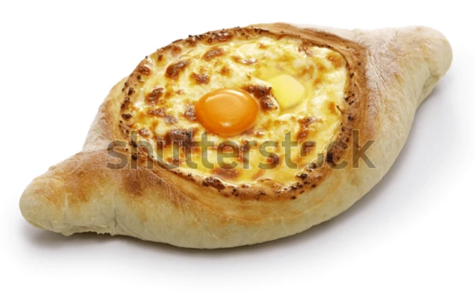
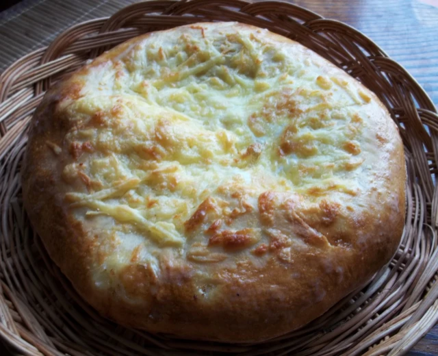

khachapuri is a dish of cheese filled bread, it dates back to the 12th century.
although there are serveral different types of this dish, we will discuss a simple way to make it.

named for Adjara, a region of Georgia on the Black Sea, is a boat-shaped khachapuri, with cheese, butter, and an egg yolk in the middle.

named after the region of Mingrelia. Has extra cheese on top, uses sulguni